Встав історію —
отримай готове відео
YT Cartell Studio сама пише план, малює героїв однаковими в кожному кадрі, знімає кліпи, озвучує й монтує .mp4 із субтитрами та обкладинкою. Кожен крок можна виправити, поки не витратив жодного кредиту.
Студія — для учасників спільноти YT Cartell: вхід через Telegram і підписка на канал і чат. Як отримати доступ
 YT Cartell Studio
YT Cartell Studio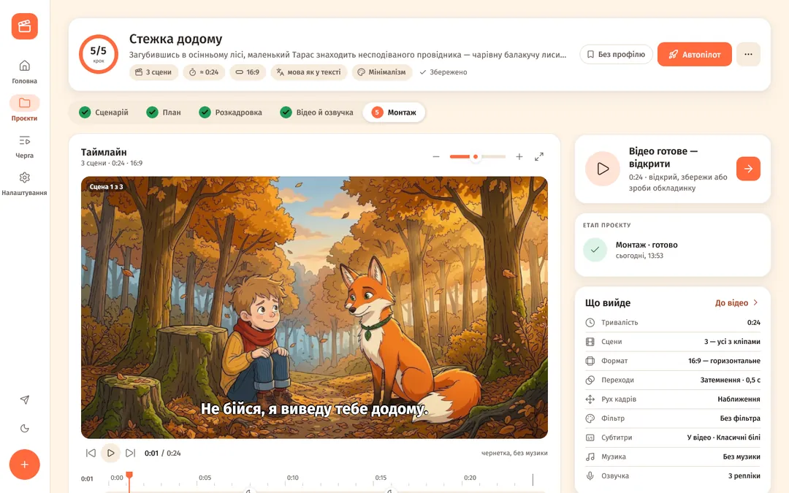
Нове в 2.0.1
Герої говорять прямо в кадрі, фільм за прикладом із YouTube, мікрофон, Telegram-бот і експорт у DaVinci Resolve, Premiere, Final Cut та CapCut.
Уже маєш студію — натисни «Оновлення» в меню ліворуч: проєкти, ключі й налаштування лишаться на місці.
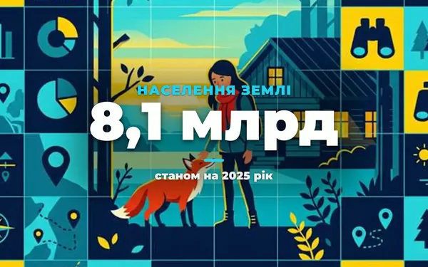
Голос у відео і режими
Герої говорять прямо в кадрі, фільми без людей і моушн-графіка з анімованими заголовками й числами.
Як користуватися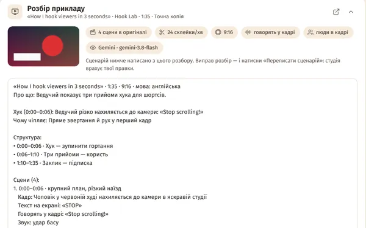
Перезняти за прикладом
Посилання на YouTube + твоє побажання — Gemini розбирає відео, студія робить новий фільм за зразком.
Як користуватися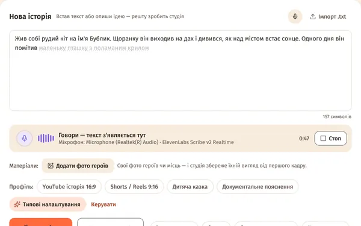
Мікрофон
Говориш — текст з'являється в «Новій історії». Шість хмарних сервісів або whisper.cpp без інтернету.
Як користуватися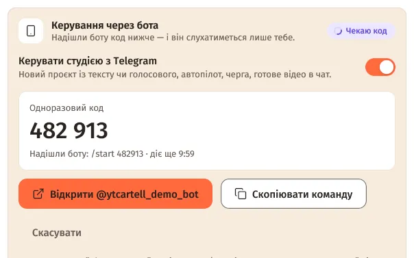
Telegram-бот
Новий проєкт текстом чи голосовим, черга, прогрес наживо й готове відео — з телефона.
Як користуватися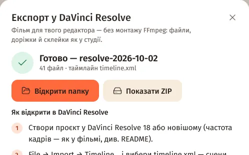
Експорт у редактори
DaVinci Resolve, Premiere Pro, Final Cut Pro, CapCut, Kdenlive, Shotcut, OpenTimelineIO.
Як користуватися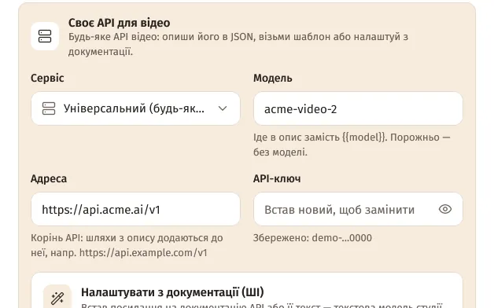
Своє API, RoyalTechno і Google
Будь-який сервіс кадрів і відео за описом JSON або з документації, пресет RoyalTechno, Gemini Omni Flash.
Як користуватися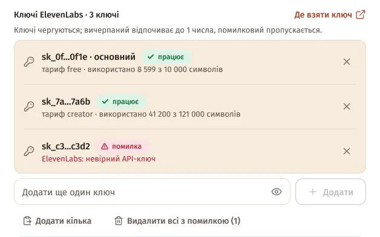
Озвучка й ключі
Свої ключі в кожного сервісу, ключі пачкою, голос за ID, AssemblyAI і що змінюється в ElevenLabs.
Як користуватися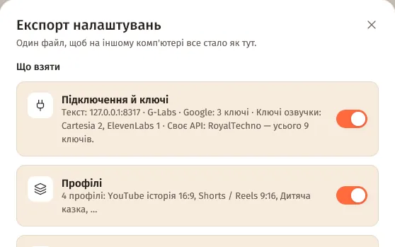
Перенесення налаштувань
Усі ключі, підключення й профілі одним зашифрованим файлом — на інший комп'ютер чи як резервна копія.
Як користуватисяП'ять кроків від тексту до .mp4
Студія веде тебе крок за кроком і показує все, що придумав ШІ: героїв, місця, репліки й промти. Не подобається — виправ, і лише потім генеруй.
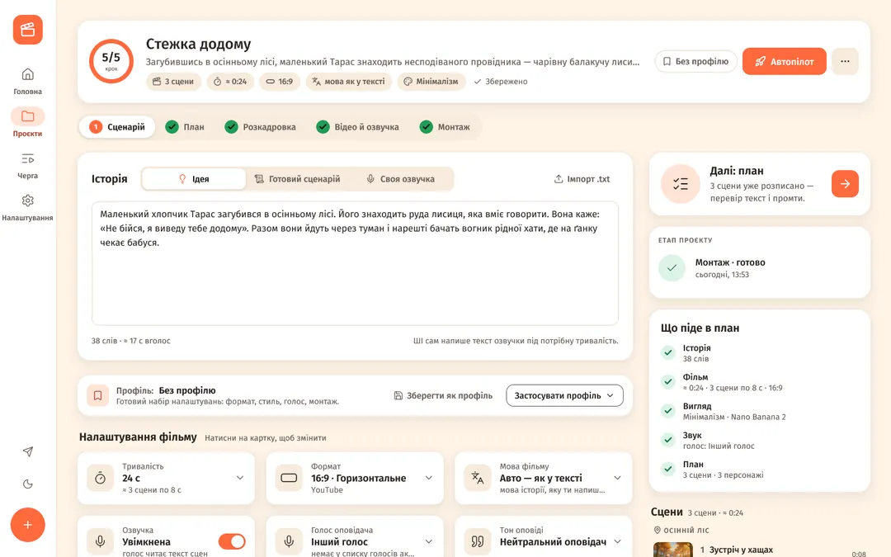
Сценарій: встав історію або ідею
Три режими: «Ідея» — ШІ сам напише текст під потрібну тривалість, «Готовий сценарій» — озвучимо слово в слово, «Своя озвучка» — сцени наріжуться під твій запис. Або встав посилання на YouTube — «Перезняти за прикладом».
- Тривалість від 15 секунд до 30 хвилин
- 16:9 для YouTube або 9:16 для Shorts і Reels
- Стиль, жанр, голос оповідача, тон, камера й темп
- Звук і що в кадрі: голос у відео, без людей, моушн-графіка
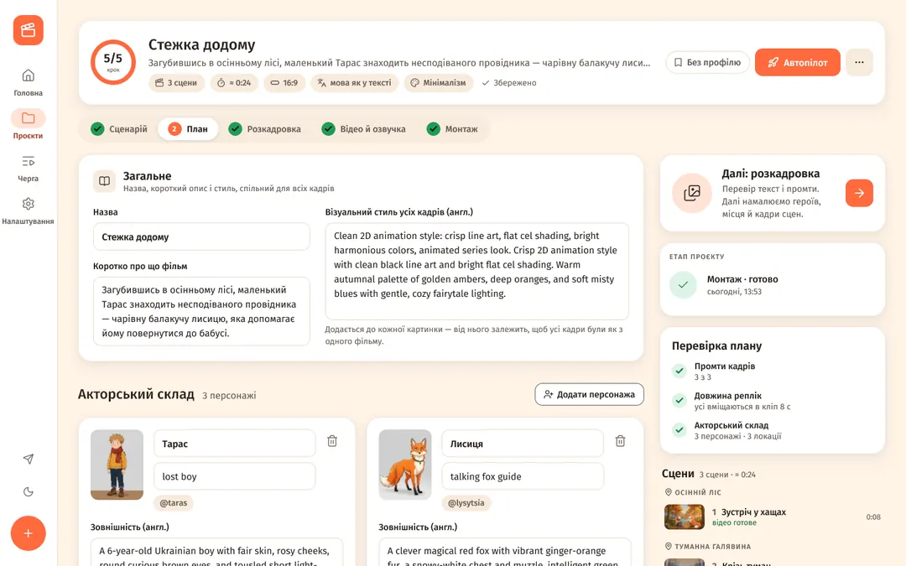
План: герої, місця й сцени
ШІ пише назву, короткий опис, персонажів із власними голосами, локації й сцени — хто говорить, де, хто в кадрі. Усе редагується тут же й зберігається само.
- Герої з твоїх фото — під твоїми іменами
- Попередить, якщо репліка довша за кліп
- «Переписати промти ШІ» з твоїм побажанням
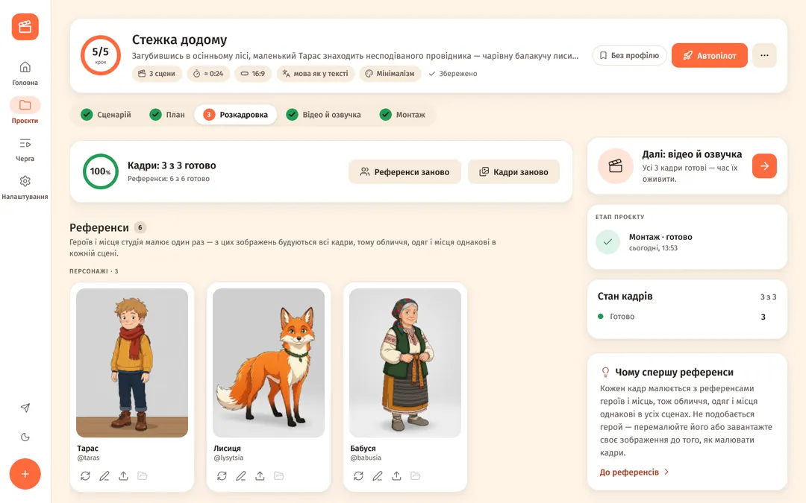
Розкадровка: ті самі герої в кожному кадрі
Спершу студія малює обличчя героїв і місця, потім перший кадр кожної сцени — уже з ними. Будь-який кадр можна перемалювати, змінити його промт або завантажити свій.
- Розкадровка 3×3 — дев'ять моментів дії на сцену
- Ланцюжок кадрів: кожна сцена продовжує попередню
- Обидва режими — з G-Labs Omni Flash
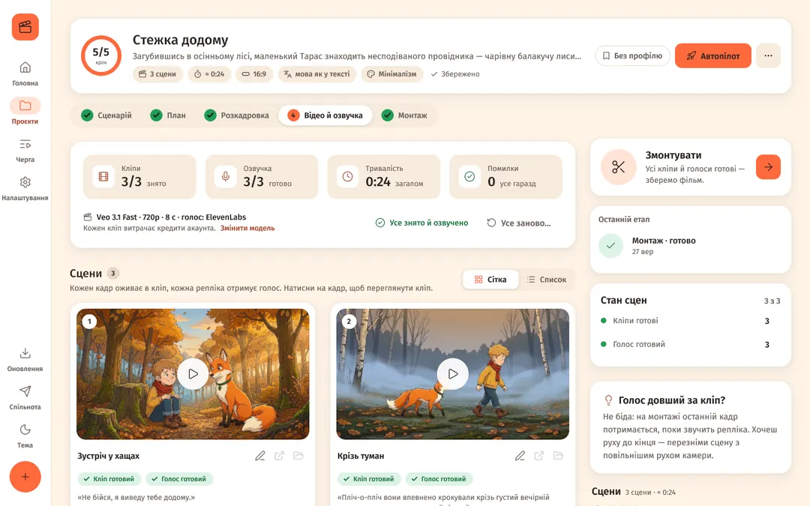
Відео й озвучка
«Все разом» знімає кліпи й озвучує репліки. Щось не вдалося — переробиш лише цю сцену, а «Перезняти змінені» не чіпає того, що вже готове.
- До 20 сцен одночасно — у межах лімітів твого сервісу
- Кожен герой говорить своїм голосом — озвучкою або прямо в кадрі
- Динамічна довжина: кліп рівно під репліку
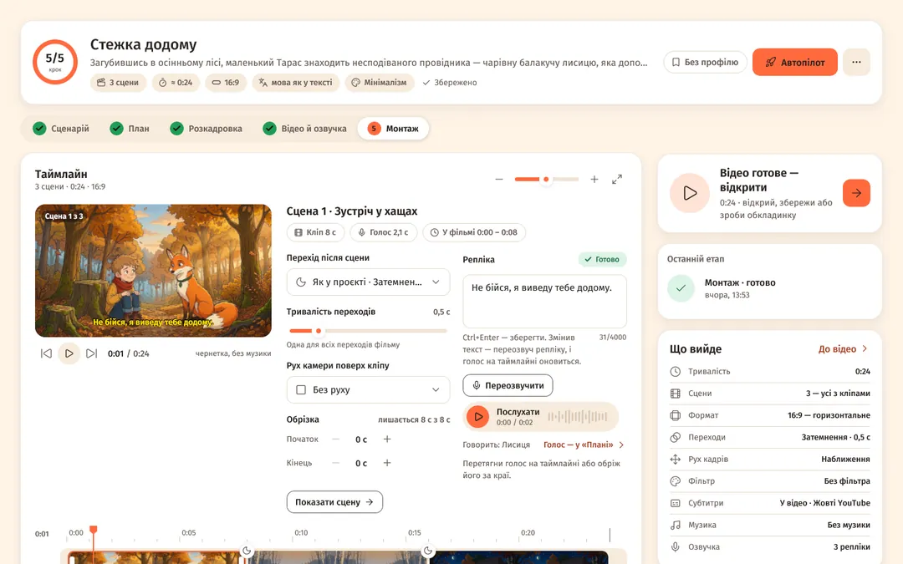
Монтаж і готовий .mp4
Таймлайн із переглядом: порядок сцен, обрізка, переходи, рух камери, фільтри, субтитри й музика. «Змонтувати відео» кредитів не витрачає.
- Готовий .mp4, субтитри .srt і обкладинка JPEG
- «Відкрити», «Показати в папці», «Зберегти як…»
- Експорт у DaVinci Resolve, Premiere, Final Cut, CapCut
Відеоурок: від історії до готового відео
Подивись, як пройти весь шлях у справжній студії — що натискати й де що лежить.
Відеоурок скоро
Ми вже його готуємо. Щойно буде — з'явиться тут і в Telegram-каналі YT Cartell.
Канал YT CartellНе хочеш покроково? Натисни «Автопілот»
Встав історію, вибери профіль — і студія сама пройде всі п'ять кроків: план, герої, кадри, відео й озвучка, монтаж, а за бажанням ще й обкладинка.
- Повторні спроби
- Кадри, кліпи й озвучку, що не вдалися, студія пробує ще раз — до трьох разів. Може змонтувати фільм, навіть якщо якась сцена так і не вийшла.
- Профілі
- «YouTube історія 16:9», «Shorts / Reels 9:16», «Дитяча казка», «Документальне пояснення» — або опиши свій канал словами, і ШІ сам заповнить профіль.
- Черга
- Прогрес усіх проєктів наживо. Проєкт можна закрити — робота йде далі.
- Telegram-бот
- Новий проєкт текстом чи голосовим, черга, прогрес наживо й готове відео — прямо в чат на телефоні. Як підключити
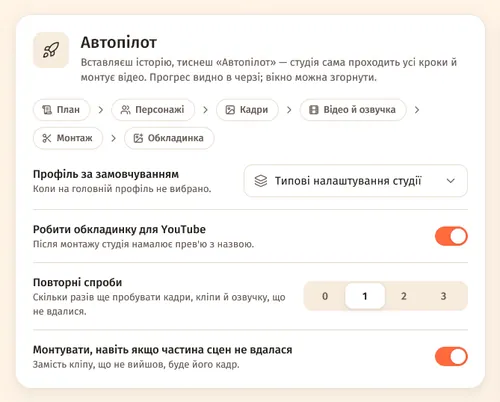
Герої однакові від першого кадру до останнього
Спершу студія малює кожного героя й кожне місце окремо, а потім будує на цих референсах кадри всіх сцен. Тарас у червоному шарфі лишається Тарасом і в третій сцені.
- Свої фото героїв і місць
- Додай фото в «Матеріали» — і в кадрах буде саме твій герой, без генерації й без витрат.
- Перемалюй одне — решта на місці
- Не сподобався кадр? Перемалюй його, зміни промт або завантаж свій. Готове не перемальовується.
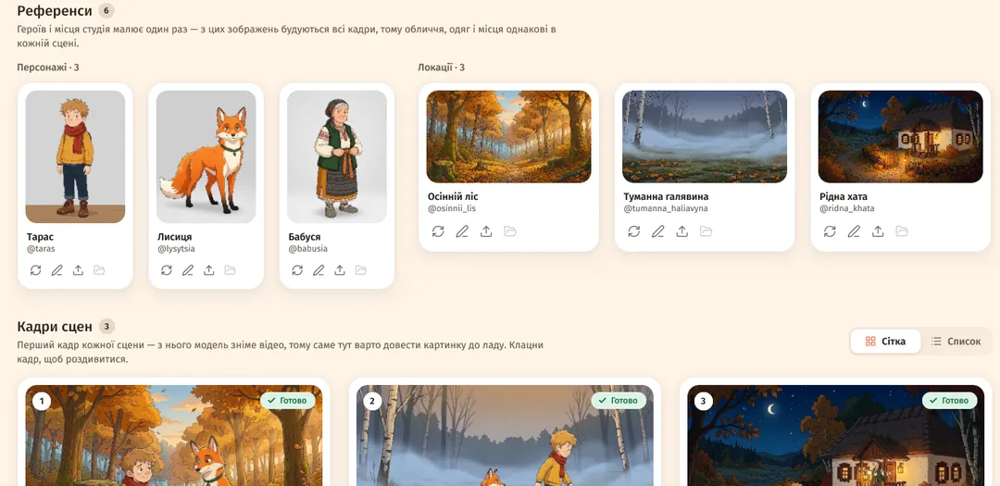
71 стиль — вибирай на око, а не за назвою
Дівчина в червоному шарфі зустрічає лисицю біля хатки в осінньому лісі — так цю сцену малює кожен стиль студії. Чотири нові стилі для моушн-графіки й відео без людей показано схемою.
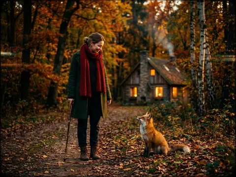
Підходить для драм, трилерів і майже будь-якої історії.
Кіно 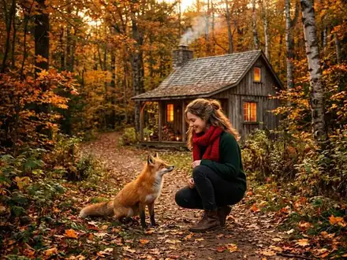
Підходить для правдивих, побутових і документальних історій.
Реалізм 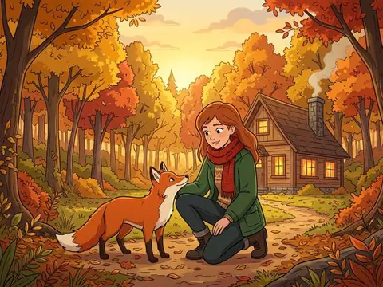
Підходить для мультсеріалів, казок і гумору.
2D-анімація 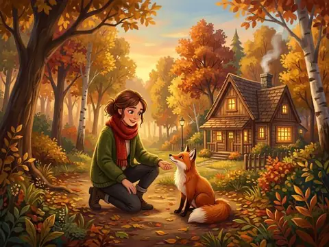
Підходить для казок, пригод і м'яких драм.
2.5D мальований 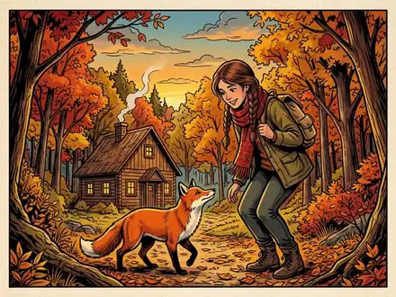
Підходить для пригод, екшену й героїчних історій.
Комікс 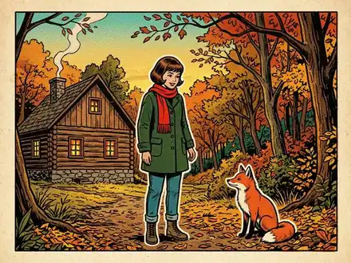
Підходить для ретро-історій, пародій і епохи 50–60-х.
Ретро-комікс 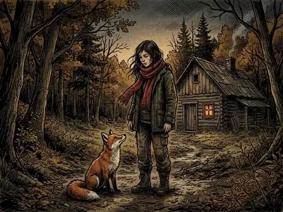
Підходить для кримінальних, темних і панк-історій.
Брудний комікс 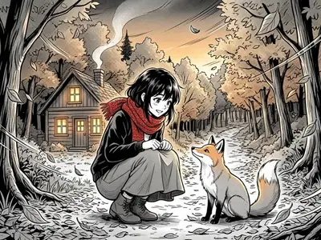
Підходить для аніме-історій, драм і пригод.
Манґа 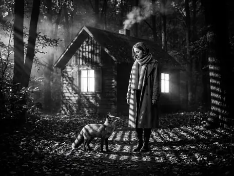
Підходить для детективів, трукраймів і загадок.
Нуар 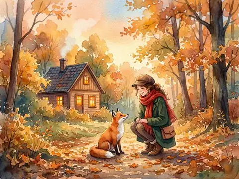
Підходить для казок, ліричних і спокійних історій.
Акварель 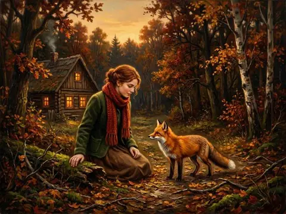
Підходить для історії, епосу й біографій.
Олійний живопис 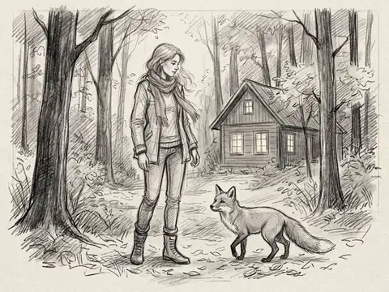
Підходить для спогадів, щоденникових історій і пояснень.
Скетч 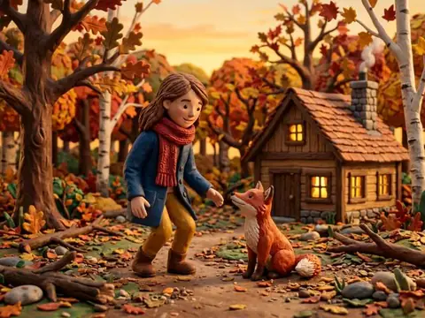
Підходить для гумору, дитячих і сімейних історій.
Пластилін 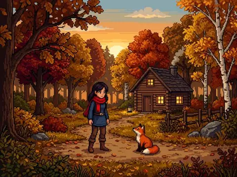
Підходить для ігрових тем, ретро й гумору.
Піксель-арт 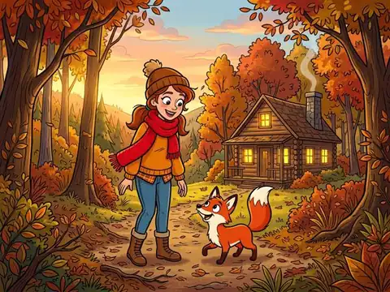
Підходить для гумору й дитячих пригод.
Класичний мультик 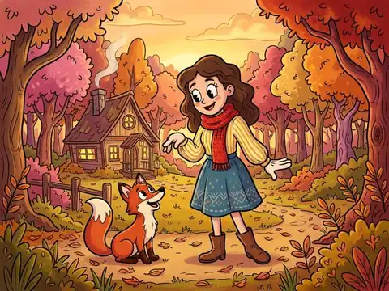
Підходить для гумору, ретро-казок і музичних історій.
Rubber Hose 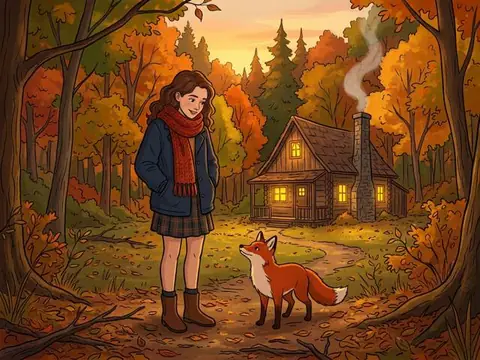
Підходить для снів, психології й незвичних історій.
Ротоскоп 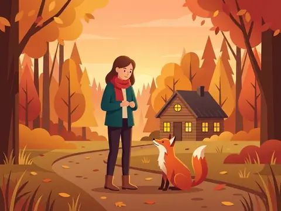
Підходить для пояснень, бізнесу й технологій.
Векторний мінімалізм 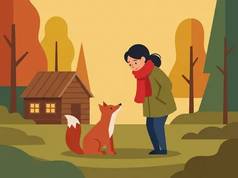
Підходить для гумору, психології й коротких пояснень.
Мінімалізм 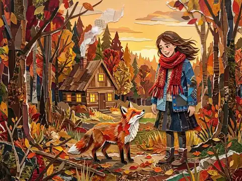
Підходить для історії, культури й відео-есеїв.
Колаж 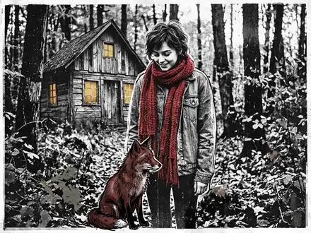
Підходить для панку, сатири й контркультури.
Андеграунд 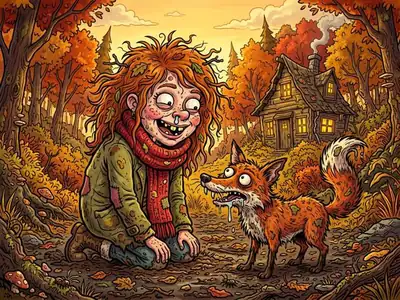
Підходить для абсурдного гумору й пародій.
Гротеск 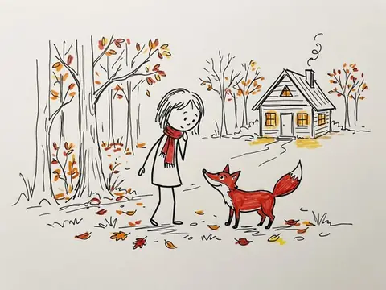
Підходить для гумору, лайфхаків і простих пояснень.
Стікмен 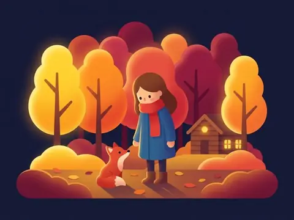
Підходить для науки, космосу й пояснень «як це працює».
Науковий пояснювач 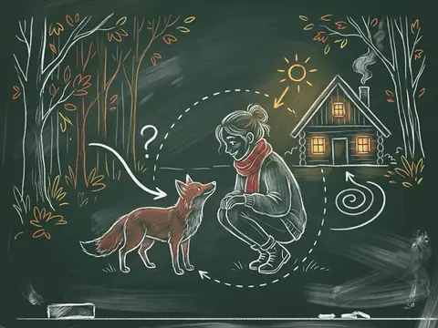
Підходить для уроків, історії науки й освітніх пояснень.
Крейдяна дошка 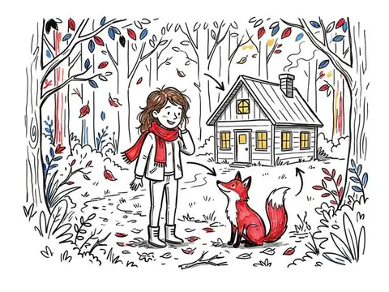
Підходить для бізнес-пояснень, лайфхаків і мотивації.
Дошка з маркером 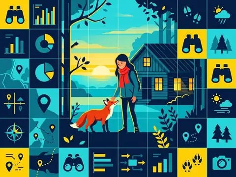
Підходить для фінансів, геополітики, порівнянь і статистики.
Інфографіка 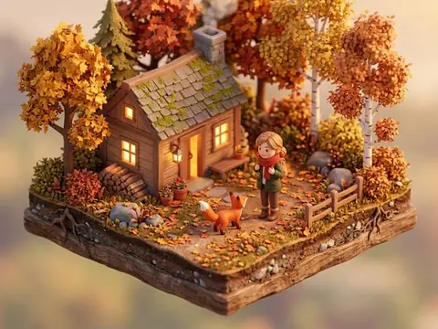
Підходить для пояснень, бізнесу, міст і процесів.
Ізометрична діорама 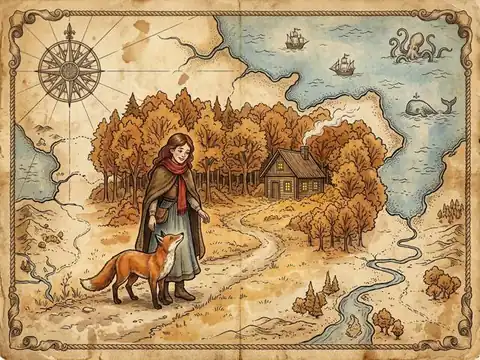
Підходить для історії, геополітики, подорожей і воєн.
Стара мапа 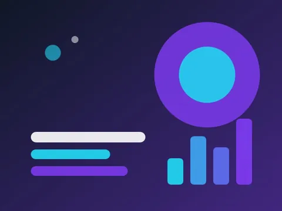
Підходить для пояснень, фактів, бізнесу й технологій.
Моушн-графіка 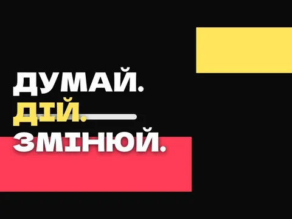
Підходить для цитат, мотивації, списків і коротких фактів.
Кінетична типографіка 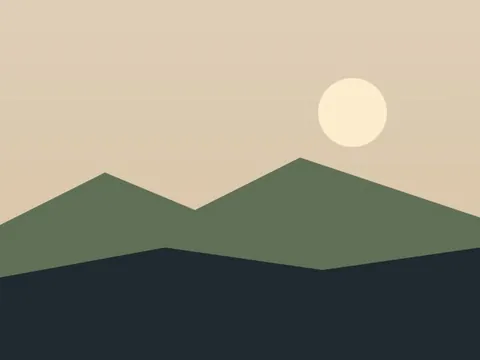
Підходить для фактів, історії місць, природи й відео без людей.
Документальний b-roll 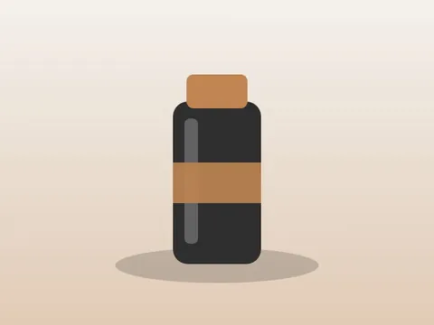
Підходить для оглядів, реклами, брендів і предметів.
Предметна зйомка 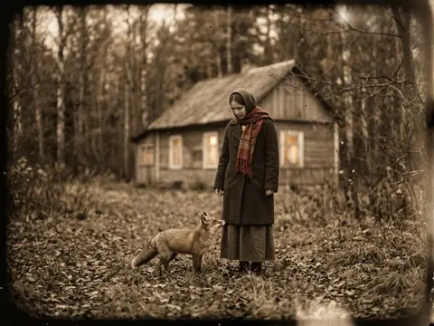
Підходить для історії, трукраймів і загадок минулого.
Архівна плівка Підходить для історій Другої світової, біографій і епохи.
Фото 1940-х Підходить для історичних драм, імперій і давніх цивілізацій.
Історичний реалізм Підходить для фейслес-каналів, трукраймів і психології.
Кіно без облич Підходить для тварин, природи й фактів про планету.
Дика природа Підходить для природи, науки й медитативних відео.
Макро-ботаніка Підходить для космосу, наукової фантастики й історій астронавтів.
Космічна драма Підходить для історій про СРСР, ностальгії й холодної війни.
Радянський ретрореалізм Підходить для дитячих і сімейних історій, казок.
Сімейна 3D-анімація Підходить для казок, дитячих історій і ностальгії.
Класична радянська анімація Підходить для казок, дитячих і освітніх відео.
Паперова аплікація Підходить для затишних дитячих історій і казок на ніч.
Фетрова анімація Підходить для романтики, мрій і ліричних історій.
Сяюче аніме Підходить для екшену, трилерів і драм.
Драматичне аніме Підходить для гумору, коротких смішних історій і дітей.
Чібі Підходить для гумору, пояснень і коротких скетчів.
Маркерний мультик Підходить для трилерів, кримінальних і темних історій.
Гранж-графічний роман Підходить для пригод, міфології й фентезі-світів.
Фентезі-комікс Підходить для притч, релігії, філософії й мотивації.
Золота алегорія Підходить для середньовіччя, легенд і церковної історії.
Середньовічний рукопис Підходить для японських легенд, самураїв і природи.
Укійо-е Підходить для українських казок, легенд і свят.
Петриківський розпис Підходить для історій 1920–30-х, розкоші й подорожей.
Ар-деко постер Підходить для притч, фольклору й історичних тем.
Ліногравюра Підходить для релігії, легенд і лицарських історій.
Вітраж Підходить для драм, воєнних історій і біографій.
Вугілля Підходить для філософії, дзену й азійських легенд.
Туш сумі-е Підходить для дитячих книжок і казок на ніч.
Гуаш для книжки Підходить для дитячих історій, гумору й спогадів.
Дитячий малюнок Підходить для міфології й античної історії.
Давньогрецька кераміка Підходить для хорору, фольклору й легенд про чудовиськ.
Темне фентезі Підходить для езотерики, міфів і психології.
Таро в стилі модерн Підходить для езотерики, містики й духовних тем.
Космічне сяйво Підходить для ігрових тем, дитячих пригод і пояснень.
Воксельний світ Підходить для пояснень, ігрових і техно-тем.
Низькополігональне 3D Підходить для технологій, майбутнього й трилерів.
Неоновий кіберпанк Підходить для ностальгії, інтернет-культури й музики.
Вейпорвейв Підходить для хорору, містики й моторошних історій.
Аналоговий хорор VHS
А ще — 36 жанрів і ніш, 9 варіантів камери, 9 тонів оповіді й «Свій стиль»: опиши його словами або додай фото-зразок.
Монтаж — як у редакторі, тільки простіше
Перетягни сцену, обріж кліп за край, вибери перехід між будь-якими двома сценами. Під кліпами — доріжка голосу: репліку можна посунути, обрізати й переозвучити просто тут.
23 переходи
Затемнення, розчинення, шторки, зсуви, коло, пікселі…
12 ефектів руху
Наближення, Кен Бернс, наїзд, дрейф, ручна камера…
15 кольорових фільтрів
Кіно, золота година, місячне світло, нуар, плівкове зерно…
8 стилів субтитрів
Жовті YouTube, караоке, біла плашка, великі по центру для Shorts…
Фонова музика сама тихішає під голос, а гучність фільму вирівнюється до −14 LUFS. Субтитри — прямо у відео або файлом .srt. «Змонтувати відео» кредитів не витрачає. Хочеш доробити в редакторі — «Експортувати в…» DaVinci Resolve, Premiere Pro, Final Cut Pro, CapCut чи Kdenlive.
Обкладинка для YouTube — у тому ж вікні
Візьми кадр сцени, свою картинку або намалюй нову, додай заголовок — і одразу побачиш, якою її побачать глядачі на YouTube.
- 12 шаблонів
- Від «Великий заголовок знизу» до «Неон» і «Моторошний». Шрифт, кольори й розташування можна змінити.
- 8 шрифтів із повною українською абеткою
- Напиши *слово* в зірочках — і воно стане кольоровим. Заголовок може запропонувати ШІ.
- Готовий JPEG
- 1280×720 для YouTube або 1080×1920 для Shorts, до 2 МБ — як хоче YouTube.
93 мови й твій власний голос
Пиши українською — фільм отримуй англійською, іспанською чи німецькою. Мова озвучки, субтитрів і назви вибирається окремо, а «Авто» бере мову тексту.
93 мови озвучки й субтитрів
Повний список — у студії, з пошуком.
- Українська
- Англійська
- Африкаанс
- Амхарська
- Арабська
- Вірменська
- Ассамська
- Астурійська
- Азербайджанська
- Білоруська
- Бенгальська
- Боснійська
- Болгарська
- Бірманська
- Кантонська
- Каталанська
- Себуанська
- Чічева
- Китайська (мандаринська)
- Хорватська
- Чеська
- Данська
- Нідерландська
- Естонська
- Філіппінська
- Фінська
- Французька
- Фула
- Галісійська
- Грузинська
- Німецька
- Грецька
- Гуджараті
- Хауса
- Іврит
- Гінді
- Угорська
- Ісландська
- Індонезійська
- Ірландська
- Італійська
- Японська
- Яванська
- Камба
- Каннада
- Казахська
- Корейська
- Курдська (сорані)
- Киргизька
- Лаоська
- Латиська
- Лінгала
- Литовська
- Луганда
- Люксембурзька
- Македонська
- Малайська
- Малаялам
- Мальтійська
- Маорі
- Маратхі
- Монгольська
- Непальська
- Норвезька
- Окситанська
- Орія
- Пушту
- Перська
- Польська
- Португальська
- Панджабі
- Румунська
- Російська
- Сербська
- Шона
- Сіндхі
- Словацька
- Словенська
- Сомалійська
- Іспанська
- Суахілі
- Шведська
- Таджицька
- Тамільська
- Телугу
- Тайська
- Турецька
- Урду
- Узбецька
- В'єтнамська
- Валлійська
- Волоф
- Зулу
Переклад проєкту
Той самий фільм іншою мовою — окремим проєктом. Кадри й кліпи ті самі, заново робляться лише текст, озвучка й субтитри, тож це хвилини, а не години.
Своя озвучка
Завантаж запис свого голосу — студія розпізнає мову, наріже сцени точно під твої фрази, і у фільмі звучатиме саме ти. Є субтитри SRT чи VTT? Розпізнавати не доведеться.
Студія — для спільноти YT Cartell
Вхід — через Telegram. Студія відкривається учасникам каналу й чату YT Cartell і, поки відкрита, перевіряє підписку.
- Подай заявку в каналt.me/YT_cartell — заявку схвалює адміністратор.
- Приєднайся до чату спільнотиТам нові можливості, поради й відповіді на питання.
- Увійди в студії«Увійти через Telegram» → підтверди вхід → «Я підписався — перевірити». Вхід запам'ятовується на цьому комп'ютері.
- Студія бачить лише твоє ім'я в Telegram і чи ти підписаний. Доступу до повідомлень немає.
- Без інтернету студія працює ще 24 години після останньої перевірки.
Завантаж студію
Одна програма з власним вікном — без браузера й без Node.js. Проєкти, кадри й ключі лишаються на твоєму комп'ютері.
YT Cartell Studio
Остання версія з GitHub
- Windowsтвоя система Завантажити
- macOS · Apple Siliconтвоя системаВстановити через ШІ-агента Завантажити
- macOS · Intelтвоя системаВстановити через ШІ-агента Завантажити
Перший запуск
Windows. Якщо з'явиться «Windows захистив ваш ПК» — натисни «Докладніше» → «Виконати в будь-якому разі». Програма просто не підписана сертифікатом.
Оновлення. Нова версія — кнопка «Оновлення» в меню студії: вона сама завантажить і встановить її, а проєкти й ключі лишаться на місці.
macOS. Розпакуй .zip і перетягни YT Cartell Studio у «Програми». Перший запуск — правий клік → «Відкрити». Немає такої кнопки — «Системні параметри» → «Приватність і безпека» → «Усе одно відкрити». Або доручи все ШІ-агенту — інструкція нижче.
Що знадобиться
- Windows 10/11 (64-біт) або macOS 13 Ventura+Mac з Apple Silicon (M1 і новіші) або з Intel.
- TelegramАкаунт і підписка на канал і чат YT Cartell — як отримати доступ.
- FFmpeg разом із ffprobeДля монтажу, перегляду, мікрофона й експорту. Найпростіше — кнопка «Встановити автоматично» в самій студії. Вручну: Windows —
winget install Gyan.FFmpeg, macOS —brew install ffmpeg. - Твої сервіси генераціїТекст: CarteLink, будь-який OpenAI-сумісний сервіс або Google Gemini. Кадри й відео: G-Labs Studio, Google (Gemini Omni Flash / Veo) або своє API — OpenAI, fal.ai, Replicate, Runway, Luma, MiniMax, RoyalTechno чи будь-яке інше за описом. Озвучка: ElevenLabs, Cartesia, OpenAI, Google Cloud, Azure, MiniMax, Fish Audio або свій сервер.
- Ключі — лише в тебеСтудія зберігає їх тільки на твоєму комп'ютері.
Встановлення на Mac через ШІ-агента
Не хочеш розбиратися з Терміналом? Відкрий на Mac ШІ-агента, який уміє виконувати команди, — Claude Code, Codex CLI чи інший, — встав інструкцію й запусти. Далі він усе зробить сам.
Що зробить агент
- Завантажить останній реліз з GitHub — zip саме під твій Mac
- Звірить SHA-256 із SHA256SUMS.txt — підмінений файл не встановиться
- Покладе програму в «Програми» й зніме карантин
- Поставить FFmpeg через Homebrew, а whisper-cpp — якщо скажеш
- Запустить студію й підкаже, що налаштувати далі
Паролі (пароль Mac для Homebrew) вводиш тільки ти. Якщо Mac-версії в релізі ще немає — агент зупиниться й скаже про це.
Або вручну — три кроки
- Завантаж і перенесиВізьми .zip для свого Mac з останнього релізу, розпакуй і перетягни YT Cartell Studio у «Програми».
- Зніми карантинУ Терміналі:
xattr -dr com.apple.quarantine "/Applications/YT Cartell Studio.app" - Постав FFmpegЧерез Homebrew:
brew install ffmpeg
Інструкція для агента
Встав цілком у Claude Code, Codex CLI чи іншого агента
Встанови на цей Mac програму YT Cartell Studio з офіційних релізів GitHub (https://github.com/gitkalenyuk/yt-cartell-studio). Працюй крок за кроком і після кожного кроку коротко пиши, що зроблено. Використовуй лише офіційні джерела: релізи цього репозиторію, https://brew.sh та формули Homebrew. Паролі вводжу я сам — не вводь і не виводь їх. Нічого не видаляй, крім старої копії самої програми. 1. Перевір систему:`sw_vers`(потрібна macOS 13 Ventura або новіша) і`uname -m`(arm64 = Apple Silicon, x86_64 = Intel). 2. Дізнайся останню версію:`curl -fsSL https://api.github.com/repos/gitkalenyuk/yt-cartell-studio/releases/latest`Обери файл під мою архітектуру:`YT-Cartell-Studio-<версія>-macos-arm64.zip`(Apple Silicon) або`YT-Cartell-Studio-<версія>-macos-x64.zip`(Intel); якщо його нема, підійде`…-macos-universal.zip`. Якщо жодного zip для macOS у релізі немає — зупинись і скажи мені, що Mac-версія ще не опублікована. 3. Завантаж обраний zip і`SHA256SUMS.txt`з того ж релізу в`~/Downloads/yt-cartell-studio/`(curl -fL з адрес`browser_download_url`). Перевір контрольну суму:`shasum -a 256 <zip>`має збігтися з рядком цього файлу в`SHA256SUMS.txt`. Якщо не збігається — зупинись і нічого не встановлюй. 4. Якщо програма вже запущена — закрий її:`osascript -e 'quit app "YT Cartell Studio"'`. Розпакуй:`ditto -x -k <zip> ~/Downloads/yt-cartell-studio/app`. Якщо в /Applications вже є «YT Cartell Studio.app» — перейменуй її на «YT Cartell Studio.old.app», скопіюй нову (`ditto "<…>/YT Cartell Studio.app" "/Applications/YT Cartell Studio.app"`), а після успішного запуску видали стару копію. 5. Програма не підписана сертифікатом Apple, тому зніми карантин:`xattr -dr com.apple.quarantine "/Applications/YT Cartell Studio.app"`. 6. Потрібні інструменти: - Homebrew:`command -v brew`; якщо нема — встанови офіційним скриптом з https://brew.sh і виконай рядок`eval "$(… brew shellenv)"`, який він підкаже. -`brew install ffmpeg`— без FFmpeg програма не змонтує відео. - Запитай мене, чи потрібне локальне розпізнавання мови (для «Своєї озвучки» без інтернету); якщо так —`brew install whisper-cpp`. 7. Запусти:`open -a "YT Cartell Studio"`. Відкриється вікно входу через Telegram — це нормально. Перевір, що в`~/Library/Application Support/YT Cartell Studio/studio.log`немає слова panic. 8. Прибери завантажені файли з`~/Downloads/yt-cartell-studio/`і напиши мені звіт: встановлена версія, архітектура, що довстановлено (ffmpeg, whisper-cpp), і що робити далі: - увійти в програмі через Telegram і бути підписаним на канал https://t.me/YT_cartell (заявку схвалює адмін) та чат https://t.me/+Jj06Fbj8-8oyZDQ6; - встановити G-Labs Studio (https://duckmartians.info/g-labs/en/) для кадрів і відео, увімкнути в ній Webhook API (Generate → Start Server) і вписати адресу http://127.0.0.1:8765 та ключ у «Налаштування → Кадри й відео» студії; - вписати текстовий сервіс (CarteLink або будь-який OpenAI-сумісний) і ключ озвучки (наприклад ElevenLabs) у «Налаштування → Підключення»; - коли вперше натисну мікрофон у «Новій історії», macOS спитає дозвіл на мікрофон — дозволити.
G-Labs Studio: кадри й відео з твого Google Flow
Окрема програма для Windows і macOS від duckmartians, безкоштовна для особистого використання. Це не наш продукт — YT Cartell Studio просто підключається до неї.
G-Labs Studio автоматизує Google Flow — картинки Nano Banana й відео Veo, а також Grok, Meta AI і ChatGPT GPT Image: кілька акаунтів Google, черги й локальний Webhook API. Студія надсилає туди запити на кадри й кліпи, тож генерація йде на кредитах твого акаунта Google — Free, Pro чи Ultra. Кліпи по 4 і 6 секунд через G-Labs знімаються лише з Ultra.
Без G-Labs теж можна. У студії є й інші шляхи: ключі Google AI Studio (Gemini Omni Flash / Veo) або своє API — OpenAI, fal.ai, Replicate, Runway, Luma, MiniMax, RoyalTechno чи будь-яке інше за описом.
Як підключити
Чотири кроки, один раз
- Встанови G-Labs StudioЗ офіційного сайту — для Windows або macOS.
- Додай свій акаунт GoogleУ розділі «Accounts». Можна кілька.
- Увімкни Webhook API«Webhook API» → «Generate» (з'явиться ключ) → «Start Server».
- Підключи YT Cartell Studio«Налаштування → Підключення → Кадри й відео»: адреса
http://127.0.0.1:8765і ключ → «Перевірити G-Labs».
Що нового у версії 2.0.1?
Голос у відео (герої говорять прямо в кадрі), фільми без людей і з моушн-графікою, «Перезняти за прикладом» із YouTube, мікрофон на Головній, Telegram-бот, експорт у редактори, будь-яке API, перенесення налаштувань одним файлом і FFmpeg одним кліком. Усе по кроках — у довіднику 2.0.1.
Чи можна керувати студією з телефона?
Так, через свого Telegram-бота: новий проєкт текстом чи голосовим, черга, прогрес наживо й готове відео прямо в чат. Студія при цьому має бути відкрита на комп'ютері. Як підключити.
Можна доробити фільм у DaVinci Resolve чи CapCut?
Так: «Експортувати в…» на кроці «Монтаж» збере кліпи, голос, музику, текст у кадрі й субтитри для DaVinci Resolve, Premiere Pro, Final Cut Pro, Kdenlive чи Shotcut, а для CapCut — пакет уже нарізаних сцен. Як відкрити в кожному редакторі.
Хто платить за генерацію?
Студія працює з твоїми сервісами й твоїми ключами, тож кредити списує сам сервіс — Google Flow через G-Labs, ElevenLabs та інші. Нічого дорогого не запускається само: кожен платний крок — окрема кнопка, і видно, скільки всього буде. Монтаж кредитів не витрачає.
Чи можна виправити те, що написав ШІ?
Так, усе: назву, опис, героїв, місця, репліки й промти кадрів. Правки зберігаються самі, щойно перестанеш друкувати, — і лише потім студія малює й знімає.
Яке довге відео можна зробити?
Від 15-секундного Shorts до фільму на 20–25 хвилин: до 150 сцен, кожна сцена — кліп на 4, 6 або 8 секунд (з Omni Flash — до 10). Формат — 16:9 або 9:16.
Що, як одна сцена не вдалася?
У кожної сцени свій стан. Переробиш лише її — решта лишається як є. «Повторити» на етапі доробляє тільки те, що не вийшло, а замінені версії кадрів, кліпів і голосів зберігаються в кошику проєкту.
Де лежать мої проєкти й ключі?
Проєкти — у «Документи → YT Cartell Studio → projects» (папку можна змінити в налаштуваннях). Ключі й налаштування — у файлі config.json у профілі користувача, лише на цьому комп'ютері.
Чи потрібен інтернет?
Так — для сервісів генерації та для перевірки підписки. Без зв'язку студія працює ще 24 години після останньої успішної перевірки. Розпізнавати мову для «Своєї озвучки» можна й без інтернету — через whisper.cpp на твоєму комп'ютері.
Можна закрити вікно, поки йде генерація?
Згорнути — так. Закриття програми зупиняє роботу, тому студія спершу перепитає. Потім натисни «Повторити» — доробиться лише незроблене.
Я працював у веб-версії. Проєкти перенесуться?
Так: «Налаштування → Дані → Вибрати папку й імпортувати». Переносяться ключі, налаштування й проєкти разом із файлами. Це разова копія — дві версії не синхронізуються.
Що таке G-Labs Studio і чи обов'язкова вона?
Окрема програма від duckmartians, через яку студія малює кадри й знімає відео у Google Flow твого акаунта Google. Вона не обов'язкова: можна підключити ключі Google AI Studio або своє API. Докладніше й як підключити.
Як оновлювати студію?
Під час запуску студія сама перевіряє, чи вийшла нова версія. Є нова — натисни «Оновлення» в меню ліворуч: студія завантажить її, перевірить і встановить після перезапуску. Перевірити вручну можна там само.
Проєкти, налаштування й ключі під час оновлення не зачіпаються — вони лежать окремо від програми.
Студія працює на Mac?
Так, є збірки для Apple Silicon та Intel. Найпростіше встановити через ШІ-агента — готова інструкція сама завантажить, перевірить і встановить усе потрібне.
Найбільше студію перевіряли на Windows — якщо на Mac щось поводиться дивно, напиши в чат спільноти.
Перше відео — з першої історії
Завантаж студію, увійди через Telegram, встав історію й натисни «Автопілот».